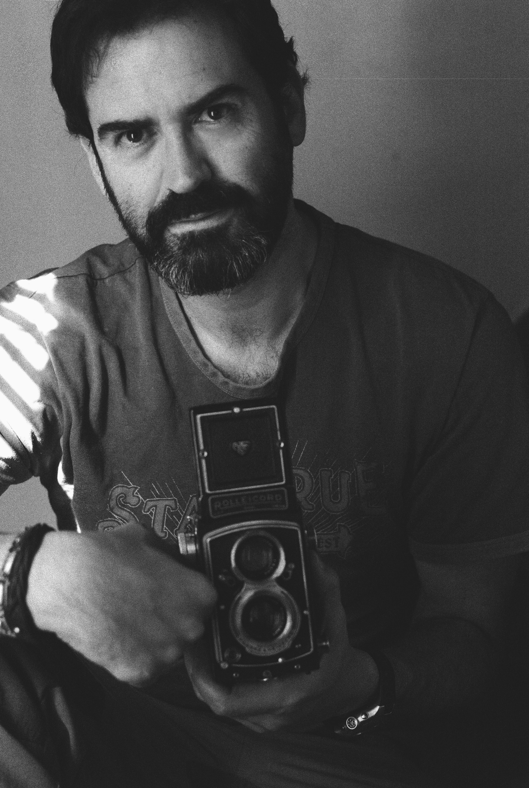

«La belleza es verdad, la verdad es belleza; eso es cuanto sabemos en la tierra, y cuanto necesitamos saber.»
— John KeatsLa Mirada
Desde 2001
La fotografía es mi manera de escribir.
Desde 2001 camino con una cámara buscando aquello que no siempre puede explicarse con palabras. No busco la belleza entendida como aquello que impresiona a primera vista.
Intento captar un momento mágico que no se puede explicar con palabras.
No sé si alguna de mis fotografías consigue conservar una pequeña parte de esa verdad, pero sé que algunas imágenes poseen una magia difícil de describir. Y esa magia, para mí, es la belleza.
La fotografía es mi cuaderno de dibujo. A veces escribo con palabras, otras con dibujos rápidos y muchas otras con una cámara. Quizá por eso sigo caminando con un 50 mm: porque no siento que fotografíe el mundo, sino que tomo notas de aquello que, por un instante, me revela su belleza.
